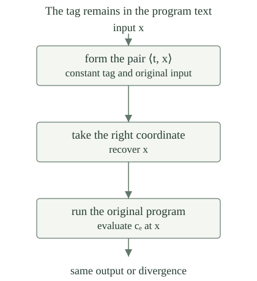

Use the fixed paired-input program language, with evaluation \(E(c,x)\), program code \(\#c\), decoded program \(c_e\), and \(\varphi_e(x)\simeq E(c_e,x)\). Equality \(\simeq\) is equality of partial values, including simultaneous undefinedness. Define the constant program \(C_t\) and the identity program \(I\) by
These are finite programs for every \(t\). Induction gives \(E(C_t,x)=t\), while decoding and re-pairing gives \(E(I,x)=x\). Both computations terminate on every input. Also, \(C_t=C_u\) implies \(t=u\): evaluate both programs at zero, or compare their recursively built syntax.
For programs \(c,d\) and numbers \(a,b\), write
Then \(E(S(c,a),x)\simeq E(c,\langle a,x\rangle)\), and \(S(c,a)=S(d,b)\) implies \(c=d\) and \(a=b\). This is the program constructor used by the existing parameter map \(s(e,a)=\#S(c_e,a)\).
The inner pairing computes \(C_a\) and \(I\), obtaining \(\langle a,x\rangle\); both computations finish. Composition then runs \(c\) on that pair. Thus the equality holds for defined outputs and for divergence.
If the two displayed programs are equal, uniqueness of their outer constructor gives \(c=d\) and \(\mathsf{pair}(C_a,I)=\mathsf{pair}(C_b,I)\). Uniqueness at the next constructor gives \(C_a=C_b\), hence \(a=b\). No comparison of the functions computed by arbitrary programs has been made: the argument reads their finite syntax.
The padding program for a program \(c\) and tag \(t\) is
The corresponding numerical padding map is \(p(e,t)=\#P(c_e,t)\). It builds program text from the old program and a numerical tag. It does not run the old program while constructing the new index.

For all \(e,t,x\in\mathbb N\),
By , \(P(c_e,t)\) first passes \(\langle t,x\rangle\) to \(\mathsf{comp}(c_e,\mathsf{right})\). The right projection terminates with output \(x\). The remaining computation is precisely \(E(c_e,x)\).
This uses the strict semantics of composition: a required intermediate computation must finish before the next begins. Here the newly added computations always finish. The original computation is then run unchanged, so an originally undefined value stays undefined as well.
The map \(p:\mathbb N^2\to\mathbb N\) is primitive recursive and jointly injective:
For each \(e\), its infinitely many indices \(p(e,0),p(e,1),\ldots\) all compute the entire partial function \(\varphi_e\).
Decoding a program index and constructing, encoding and composing finite programs are primitive-recursive operations. The recurrence defining \(C_t\) is primitive recursion on \(t\). Applying these operations in the displayed definition of \(P\) proves that \(p\) is primitive recursive jointly in \(e,t\).
If \(p(e,t)=p(f,u)\), faithful decoding gives \(P(c_e,t)=P(c_f,u)\). The syntactic injectivity of \(S\) gives \(t=u\) and \(\mathsf{comp}(c_e,\mathsf{right})=\mathsf{comp}(c_f,\mathsf{right})\). Comparing their first subprograms yields \(c_e=c_f\), and encoding yields \(e=f\).
For fixed \(e\), unequal tags therefore yield unequal indices. Evaluation preservation was proved in . Thus the construction produces infinitely many different names for the same behavior, even when that behavior is nowhere defined.
Let \(L\) be a finite list of natural numbers, of length \(m\). Define its first escaping tag \(a(e,L)\) to be the least \(t\le m\) with \(p(e,t)\notin L\), and its fresh equivalent index by \(q(e,L)=p(e,a(e,L))\). These choices exist, are primitive recursive in \(e\) and the code of \(L\), and satisfy
The \(m+1\) values \(p(e,0),\ldots,p(e,m)\) are distinct. A list with \(m\) positions cannot contain all of them: each position accounts for at most one of these distinct values. This remains true if the list repeats some of its entries. Consequently an escaping tag exists in the prescribed finite range.
Membership in the coded finite list is a bounded scan using primitive-recursive indexed access and equality. The list length is primitive recursive too. The bounded least-search construction therefore finds the first escaping tag. Composing it with \(p\) gives \(q\), and supplies its evaluation identity.
Suppose \(L\) contains several indices of programs that terminate at zero. Must \(q(e,L)\) terminate at zero? Can its behavior be determined merely from its being outside the list?
No. The exact statement is \(\varphi_{q(e,L)}(0)\simeq\varphi_e(0)\). If \(e\) names the nowhere-defined function, the fresh index still diverges at zero. If \(e\) names the total constant-zero function, the fresh index still terminates there.
Such indices exist by the nowhere-defined program and the constant program above. Both choices work for the same finite list \(L\), because finite avoidance holds for every input index. Freshness separates numerical names; its behavior guarantee is equality with the supplied old program.
The actual parameter map \(s(e,a)=\#S(c_e,a)\) is primitive recursive, satisfies \(\varphi_{s(e,a)}(x)\simeq\varphi_e(\langle a,x\rangle)\), and obeys
Its primitive recursiveness and evaluation identity are the established parameter theorem. Equality of the numerical outputs gives equality of the decoded \(S\)-programs. Apply to recover \(c_e=c_f\) and \(a=b\), then encode the first equality to recover \(e=f\).
This strengthens a particular syntactically specified map. The abstract statement that some computable parameter map exists would not, by itself, assert its injectivity.
For sets \(A,B\subseteq\mathbb N\), a one-one reduction of \(A\) to \(B\) is a total computable injective function \(f:\mathbb N\to\mathbb N\) such that
Write \(A\le_1 B\) if such a function exists. The sets are one-one equivalent, written \(A\equiv_1 B\), if both \(A\le_1B\) and \(B\le_1A\). Compared with a many-one reduction, the additional requirement is that different inputs have different translated inputs. It does not require that every target input be used.
For comparison, many-one equivalence, written \(A\equiv_mB\), means \(A\le_mB\) and \(B\le_mA\).
For all sets \(A,B,C\subseteq\mathbb N\), one has \(A\le_1A\); if \(A\le_1B\) and \(B\le_1C\), then \(A\le_1C\). Every one-one reduction is a many-one reduction. Consequently \(\equiv_1\) is an equivalence relation.
The identity function is total computable, injective and membership preserving. If \(f\) and \(g\) witness the two given reductions, \(g\circ f\) is total computable by composition, and injective because both factors are. Moreover, \(x\in A\) is equivalent to \(f(x)\in B\), which is equivalent to \(g(f(x))\in C\).
Forgetting injectivity leaves the definition of a many-one reduction. Reflexivity and transitivity of \(\equiv_1\) follow from the corresponding reduction laws, while symmetry follows by exchanging its two conjuncts.
Let \(A=\{0,1\}\) and \(B=\{0\}\). Show that \(A\equiv_mB\), but \(A\not\le_1B\). What prevents the padding theorem from giving an injective reduction into this target?
The map \(f(n)=0\) for \(n\le1\), and \(f(n)=1\) otherwise, reduces \(A\) many-one to \(B\). The primitive-recursive map \(g(n)=2n\) reduces \(B\) to \(A\): its value belongs to \(\{0,1\}\) exactly when \(n=0\). Thus both reductions exist.
For a reduction \(h\) of \(A\) to \(B\), the inputs zero and one must both be sent to the only member of \(B\), so \(h(0)=h(1)=0\). Such a map is not injective. Padding supplies different indices of a computed program; it does not supply new members of an arbitrary fixed target set such as \(\{0\}\).
Alongside the existing paired halting set \(K_0\) and diagonal halting set \(K\), define the zero-input halting set \(K_z\):
Here \(K_0\) is the paired set from universal computation; its subscript does not denote a hierarchy level. The input in the defining computation is part of each convention. Equality of computed partial functions preserves their values at a fixed runtime input, not an unstated change of that input.
For a pair code \(w=\langle e,x\rangle\), let \(V(w,z)\simeq\varphi_e(x)\), with \(z\) unused. This is the jointly partial recursive constant-run procedure. Fix one index \(v\) with \(\varphi_v(\langle w,z\rangle)\simeq V(w,z)\), once for every \(w,z\). Its constant-run index map is
This is the same specified map used in the existing many-one reduction. The choice of \(v\) precedes the arguments \(w,z\). It uses ordinary universal evaluation and the parameter theorem, with no oracle and no question about whether the computation terminates.
The specified map \(c\) is primitive recursive, is injective, and satisfies
The index \(v\) is fixed, so \(c(w)=s(v,w)\) is primitive recursive. If \(c(w)=c(w')\), joint injectivity of the actual parameter map in recovers its second coordinate and gives \(w=w'\). No additional padding wrapper is needed for this particular map: its finite syntax already stores the full parameter.
The parameter theorem gives \(\varphi_{c(w)}(z)\simeq\varphi_v(\langle w,z\rangle)\simeq V(w,z)\). For \(w=\langle e,x\rangle\), this is exactly \(\varphi_e(x)\), independently of the new runtime input \(z\).
The specified maps \(d(e)=\langle e,e\rangle\), \(z(e)=\langle e,0\rangle\), and \(c\) give one-one reductions
The superscript names the witnessing map. In particular, \(K\equiv_1K_0\equiv_1K_z\).
Pairing is primitive recursive. Equality of two outputs of \(d\), or two outputs of \(z\), recovers the first coordinate and thus the original input. The reductions into \(K_0\) follow directly from its definition.
The map \(c\) is primitive recursive and injective by . If \(w=\langle e,x\rangle\), its frozen-run identity at \(z=c(w)\) gives \(w\in K_0\Longleftrightarrow c(w)\in K\). The same identity at runtime input zero gives \(w\in K_0\Longleftrightarrow c(w)\in K_z\). Every natural number is a pair code, so these equivalences cover every input.
The frozen-run identity is what licenses substituting the new program's own index. Padding an arbitrary program only gives \(\varphi_{p(e,t)}(p(e,t))\simeq\varphi_e(p(e,t))\); it does not replace that last runtime input by \(e\). Finally, composition supplies the remaining directions between the three sets.
For every \(A\subseteq\mathbb N\),
More precisely, if \(W_a=A\), the specified primitive-recursive injective map \(i_a(x)=c(\langle a,x\rangle)\) witnesses the reduction.
Choose the recognizer index \(a\) using the domain characterization of c.e. sets. The map \(x\mapsto\langle a,x\rangle\) is primitive recursive and injective, and reduces \(A\) to \(K_0\) by the paired-halting completeness argument. Compose it with \(c\), using . This is exactly the named map \(i_a\), so it is injective and sends precisely the members of \(A\) into \(K\).
Conversely, a one-one reduction is a many-one reduction. The computable preimage of the c.e. set \(K\) is c.e., so \(A\le_1K\) implies that \(A\) is c.e. The construction includes the empty set: its recognizer diverges everywhere, and its distinct translated indices all remain outside \(K\).